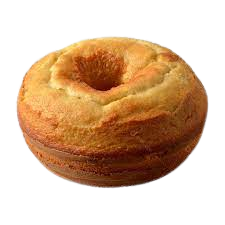

Bolo simples

Ingredientes
açúcar
2 xícaras (chá) de açúcar
farinha de trigo
3 xícaras (chá) de farinha de trigo
Qualy
4 colheres (sopa) de margarina
ovo
3 ovos
leite
1 e 1/2 xícara (chá) de leite
fermento em pó químico
1 colher (sopa) bem cheia de fermento em pó